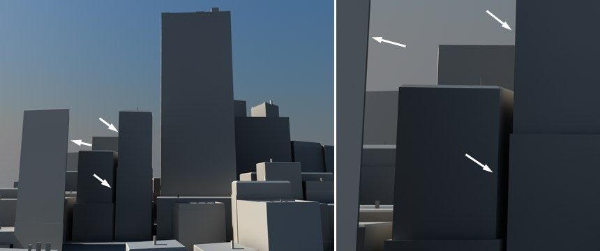
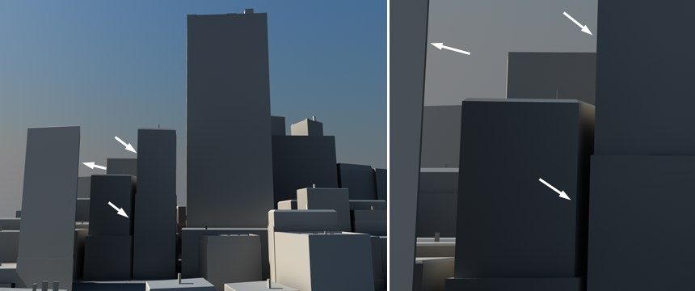

View
If this option is enabled, the active camera will be used for the rendering in the Picture Viewer.
Use this setting to define which view will be used for rendering in the Picture Viewer.
Each viewport has its own Undo View/Redo View functions (the Undo/Redo functions of the main window do not affect editor cameras, i.e., those in viewports).
The camera will move so that all objects including lights and cameras fill the active viewport and are centered.
The camera will move so that all objects apart from lights and cameras fill the active viewport and are centered.
This function resets the viewport to the default values, as if you had just started CINEMA 4D.
The camera will move so that the selected elements (e.g., objects, polygons) fill the viewport and are centered.
Hold down the
The camera will move so that the active objects fill the viewport and are centered.
  The arrows point in exactly the same directions before (left) and after (right) using the Film Move and Film Zoom commands.
 The arrows point in exactly the same directions before (left) and after (right) using the Film Move and Film Zoom commands.
These three tools (can be found in the Customize Commands Manager) work similarly to the following (located at the top of each Viewport):
These three tools work in the same way as the viewport navigation icons except they preserve the perspective, i.e., the angles of lines will remain the same. For example, the sides of a house will be at exactly the same angles in the view before and after using the Film Move, Film Magnify and Film Zoom tools.
In the Attribute Manager, set the Mode parameter to Camera. If you now change the portion of the picture shown using the Film Move, Film Magnify and Film Zoom tools, you will see that the camera’s values for Focal Length, Field Of View, Offset X and Offset Y have been changed accordingly.
This function redraws the scene. Usually, CINEMA 4D updates viewports automatically. Sometimes this is not possible, such as when you use several CPU-intensive commands in a short space of time.